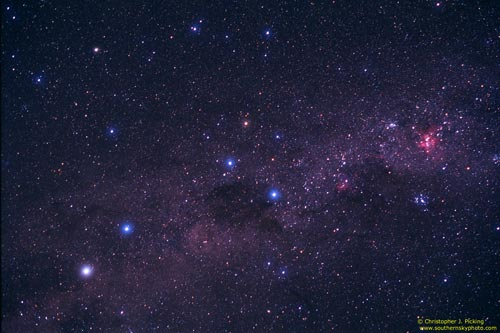
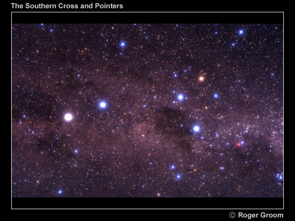
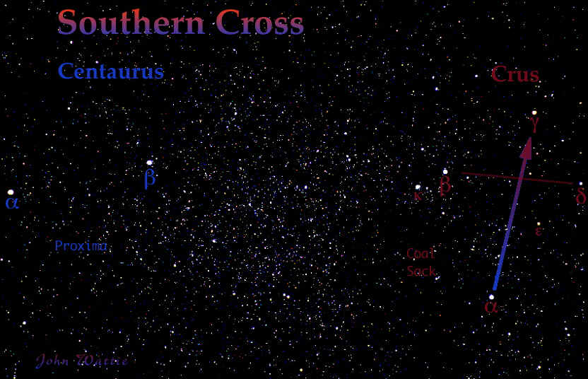

The Southern Cross and Pointers

This long-exposure photograph shows the Southern Cross and Pointers. The Pointers (centre left) are Alpha Centauri, the bright white star, and Beta Centauri, blue-white in this photo. The Southern Cross (centre) has three blue-white stars, at the foot of the cross (Acrux) and at the ends of the crossbars. Gamma Crux, at the top of the cross, appears as an orange star. The Coal Sack is the dark shape at lower left of the Southern Cross. Just above the Coal Sack is the Jewel Box, which shows up as a light orange star in this image. The two bright-red, cloudy regions at bottom right are the Lambda Centauri Nebula and the much larger Eta Carinae Nebula.

